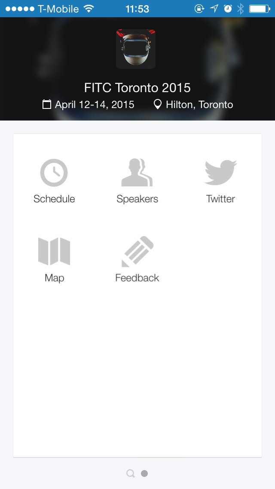
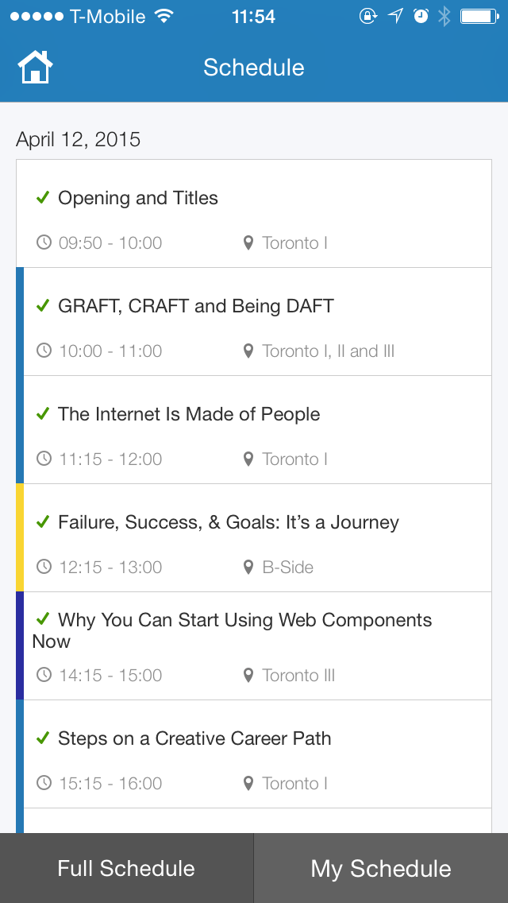
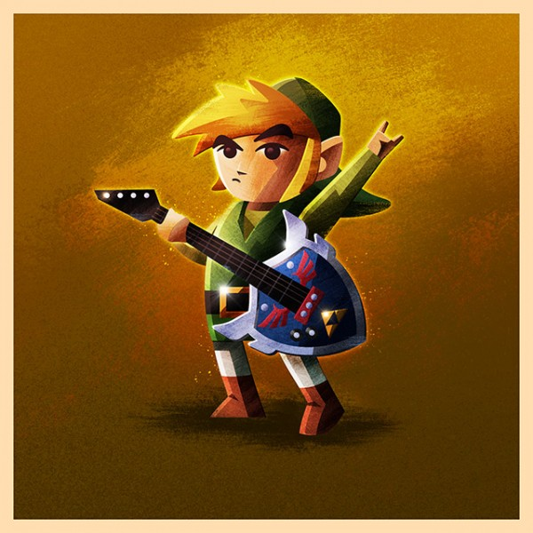
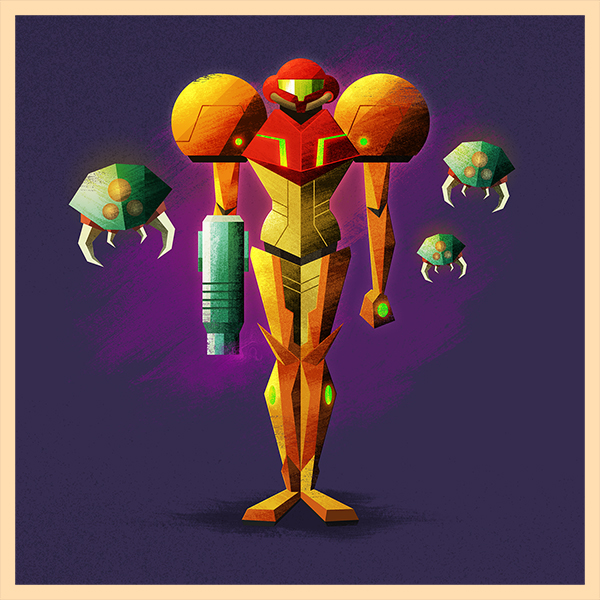
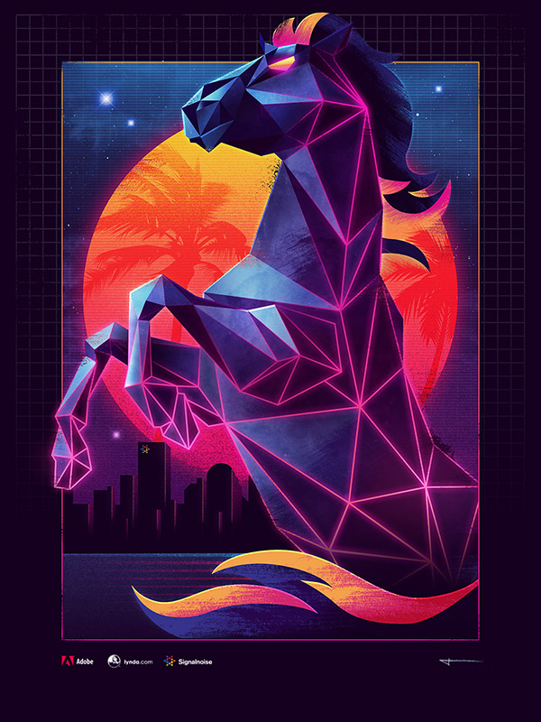
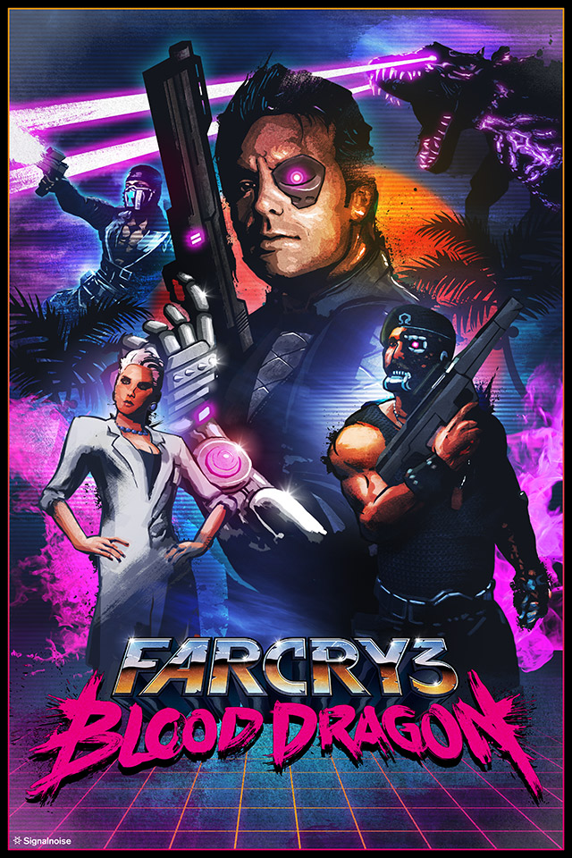
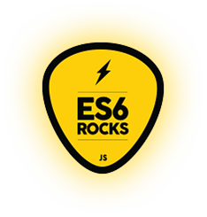

FITC TO 2015
A rad conference in Toronto about rad things and rad people
What is FITC?
- FITC = Future, Innovation, Technology, Creativity
- Features talks from creatives – both the design and development types
- Has taken place in multiple cities
- More Info:
fitc.ca
Knowledge I came back with
25% Creative, 10% Tech, 65% Inspiration


Dat App
It was super useful. That’s how I remember what presentations I went to!
Here we go!
The presentations I went to, shown in chronological order
Gavin Strange
Inspiration
GRAFT, CRAFT and Being DAFT
- Who is this spiffy gentleman?
- Works for Aardman Animations, who made Wallace & Gromit!
- Web/UI Designer, Graphic Designer, Filmmaker
- Some great quotes
- “The tiny bit extra that you go really makes a difference to people.”
- “If you start comparing yourself it’s game over.”
- “You’re a ghost driving a meat-covered skeleton made of stardust.”
- The Main Takeaway
- It’s so easy to be negative about so many things, but it’s much more important and fulfilling to be positive instead.
Jonathan Mann
Inspiration
The Internet is Made of People
- Who is this dude?
- Has been writing one song per day for the past ~2000 days
- See his YouTube Channel

- The Main Takeaway
- The power you have to make connections and make people feel something with your work is not to be underestimated.
Shawn Pucknell
Inspiration
Failure, Success & Goals: It’s a Journey
- Who’s this guy?
- Director of FITC
- Been in over 30 jobs over the past 15 years, 10 of which are businesses he’s started
- The Main Takeaway
- Failure is not to be feared, because you can survive it even in the worst possible situations.

Web Components
Tech
Super new, super unsupported, super cool
- What are Web Components?
- Web components are encapsulated HTML, CSS & JS into one component that you can import and reuse throughout a website.
- Support
- Only Chrome & Opera support this completely.
- You have to use polyfills to use in other browsers.
- The Shadow DOM is almost unusable.
- Ember.js supports most of these features.
- More Information
- webcomponents.org
Ash Thorp
Creative
Steps on a Creative Career Path
- What does he do?
- Motion, UI, 3D, Illustration, Design Direction
- Worked on Ender’s Game, Total Recall, Ghost in the Shell homage
- Runs his own podcast called The Collective
ashthorp.com

- Time & Professionalism
- Make a list of things to do the next day, ranked by importance (A, B, C, D).
- Reward yourself when you succeed.
- Be on time, and make sure you keep clear, consistent and concise communication with others.
- When working, avoid distractions.
- Process
- Incept
- Clarify Vision
- Enter the Void of Technology
- Production
- Finish
- The Main Takeaway
- Your time is precious, so use it wisely. Concentrate on one thing at a time, and your focus will reward you.
- Process is just as important as the end product.
GMUNK
Creative
8 Secrets to Intergalactic Conquest
- Who the hell...?
- Motion, UI, 3D, Design Direction
- Worked on TRON: Legacy, Oblivion
gmunk.com (nsfw)
- Pearls of Wisdom
- Understand and appreciate your roots, they define you.
- To really make it in this industry you must prepare to work / work work work work very hard.
- You need to put your work out there to be noticed.
- Pearls of Wisdom
- Make personal work that you love and turn it into work that pays.
- Collaboration keeps you versatile and sharp / Just like Bruce Lee.
- Have no expectations on how your work will be received / With no expectation comes no disappointment.
- Pearls of Wisdom
- Reference is your most valuable asset for creative output / Catalogue everything for your inspiration.
- Strive to constantly reinvent yourself.
- Pearls of Wisdom
- (BONUS) Be a lover.
- (BONUS) Don't listen to Munkowitz / Intergalactic conquest is a self-expression.
Signalnoise / James White
Creative
Bricks, Mortar and Bloody Knuckles
- Who is this fellow?
- Illustrator from Nova Scotia
- Has a distinctive 80’s-inspired style
signalnoise.com




- Process
- Rough sketches on paper. Physical media is important, and so are references!
- Cleaner sketch in Photoshop to finalize layout. Break up subject matter into different white levels and paint color over those shapes.
- Process
- Bring sketch into Illustrator and refine shapes made in Photoshop. Don’t just have Illustrator trace over it, manually place those bezier points.
- Bring clean shapes back into Photoshop. Flat shapes are boring, so add texture to those shapes to make them more interesting. Adding a low-opacity fill can tie all elements together with consistency.
- The Main Takeaway
- Hold the things that you get excited about dearly close to you, and never let go. Make your creations about what you love.

ES6
Tech
Huge update to the Javascript language
- Features
- let & const
- Keeps scope of variables to the block level, not function-level.
constlets you only set the variable once, returns an error if you try to set it twice or more.
- Features
- Destructuring
var[foo, Bar, ABC] = ['bar', 'foo', 3]- Can easily swap variable values this way
- Can set failsafes/defaults for variables
- Support
- Doesn’t have very much support yet, it’s super new
- There are shims available to add support to current and past browsers
- Basically...
- ES6 is a huge update that makes Javascript more up-to-date and viable as a backend language.
- More Info
Twitch.TV
Tech
Live Video in a Modern Web Environment
- What is Twitch.TV?
- Twitch is a platform that allows someone playing a game to stream their play session live to their viewers.
Time for a shameless plug!
- How Streaming Works
- Twitch uses the HLS protocol for their video to start
- Streamer Convert format Split into different qualities Segment into 4s chunks Cloud/CDN Viewer
- For desktop, the user's browser also converts HLS into RTMP so the video can be read by Flash
- A Couple Issues
- Handwave Latency: How long it takes for a streamer to wave their hand and for the viewer to see it.
- Time-Travel Latency: When a viewer hits a buffer, the user gets further and further behind the streamer but still sees a continuous video stream.